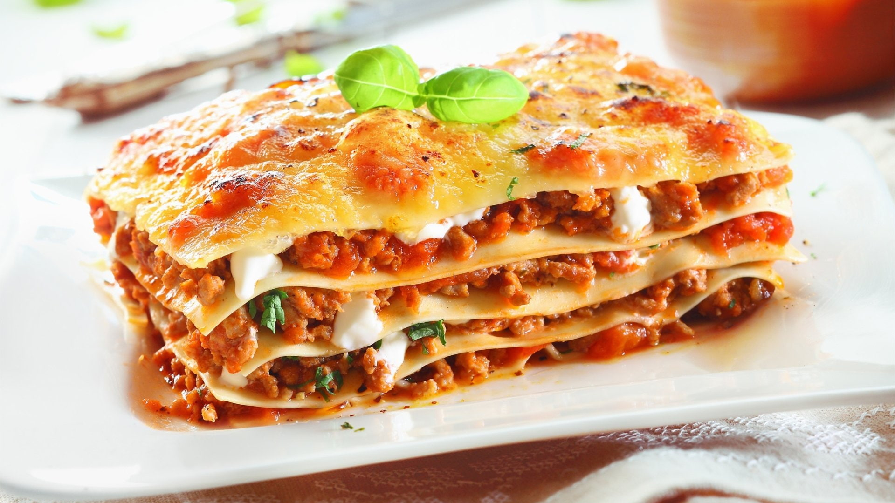

Home
Lasagna

How to make lasagna:
For this recipe, we are essentially making a thick, meaty tomato sauce and layering that with noodles and cheese
into
a casserole. Here's the run-down:
Ingredients:
- 2 teaspoons extra virgin olive oil
- 1 pound ground beef chuck
- 1/2 medium onion, diced (about 3/4 cup)
- 1/2 large bell pepper (green, red, or yellow), diced (about 3/4 cup)
- 2 cloves garlic, minced
- 3 ounces tomato paste (half a 6-ounce can)
Steps:
- Start by making the sauce with ground beef, bell peppers, onions, and a combo of tomato sauce, tomato paste,
and crushed tomatoes. The three kinds of tomatoes gives the sauce great depth of flavor.
- Let this simmer while you boil the noodles and get the cheeses ready. We're using ricotta, shredded
mozzarella, and parmesan -- like the mix of tomatoes, this 3-cheese blend gives the lasagna great flavor!
- From there, it's just an assembly job. A cup of meat sauce, a layer of noodles, more sauce, followed by a
layer of cheese. Repeat until you have three layers and have used up all the ingredients.
- Bake until bubbly and you're ready to eat!